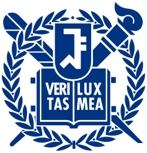
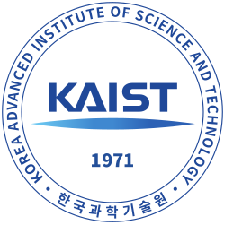
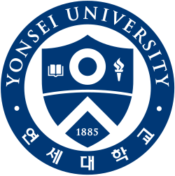
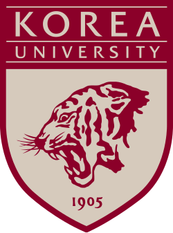

서울대, KAIST, 연세대, 고려대에서 컴퓨터공학, 의학, 수의학, 건축공학, 경영학을 공부했습니다. 전공도 진로도 서로 달랐지만, AI에 대한 확신 하나로 모여 회사를 시작했습니다. 저희가 어떤 사람들이고 왜 이 일을 하는지, 과장 없이 말씀드리겠습니다.




저희는 각자 안정적인 진로가 있던 사람들입니다. 병원에 있었고, 연구실에 있었고, 설계 사무실과 사업 현장에 있었습니다. 그런데 AI가 일하는 방식을 바꾸는 것을 직접 경험한 뒤로는, 이 기술로 무엇을 해야 하는지가 계속 머릿속을 떠나지 않았습니다. 결국 각자의 길을 멈추고 한자리에 모였습니다.
모여서 가장 먼저 한 일은 "AI가 가장 크게 쓰일 곳"을 찾는 것이었습니다. 저희가 내린 결론은 의외로 평범한 장면들이었습니다. 누군가 눈으로 성적서를 대조하고, 거래처 메일을 열어 엑셀에 옮겨 적고, 밤늦게 남아 주간보고를 취합하는 시간 — 기술로 없앨 수 있는데, 아무도 없애러 가지 않는 시간이 한국 회사들 안에 쌓여 있었습니다.
대기업에는 이미 좋은 인력과 시스템이 충분합니다. 그러나 중소기업의 반복 업무는 풀 수 있는 문제인데도 공급자가 없어 그대로 남아 있습니다. 저희는 그 일을 업(業)으로 정했습니다.
업무 자동화의 절반은 기술이고, 나머지 절반은 현장을 읽는 눈입니다. 서로 다른 훈련을 받은 사람들이 같은 문제를 보면 놓치는 구석이 줄어듭니다.
미팅에서 파워포인트를 켜지 않습니다. 귀사의 실제 서류 몇 장으로, 되는지 안 되는지를 그 자리에서 판단해 드립니다.
확실한 것만 자동으로 처리하고, 애매한 것은 사람에게 보내는 시스템을 만듭니다. 그래야 실무에서 오래 살아남는다는 것을 알고 있습니다.
처음부터 큰 계약을 제안하지 않습니다. 파일럿으로 정확도와 절감 시간을 검증한 뒤에, 확대 여부를 함께 결정합니다.
작은 회사와 일하는 것이 불안하실 수 있다는 것을 잘 압니다. 그래서 저희는 한 건 한 건을 실적이 아니라 평판이라고 생각하며 만듭니다. 그 불안은 말로 없앨 수 없고, 첫 파일럿의 결과 숫자로만 없앨 수 있다고 믿습니다.
지금은 철강·금속 유통을 첫 번째 전문 분야로 정해 공부하고 있습니다. 밀시트가 무엇인지, 왜 로트 추적이 안 되면 클레임 대응이 늦어지는지 설명할 수 있을 만큼 파고들었습니다. 다음 산업도 같은 깊이로 들어갈 것입니다.